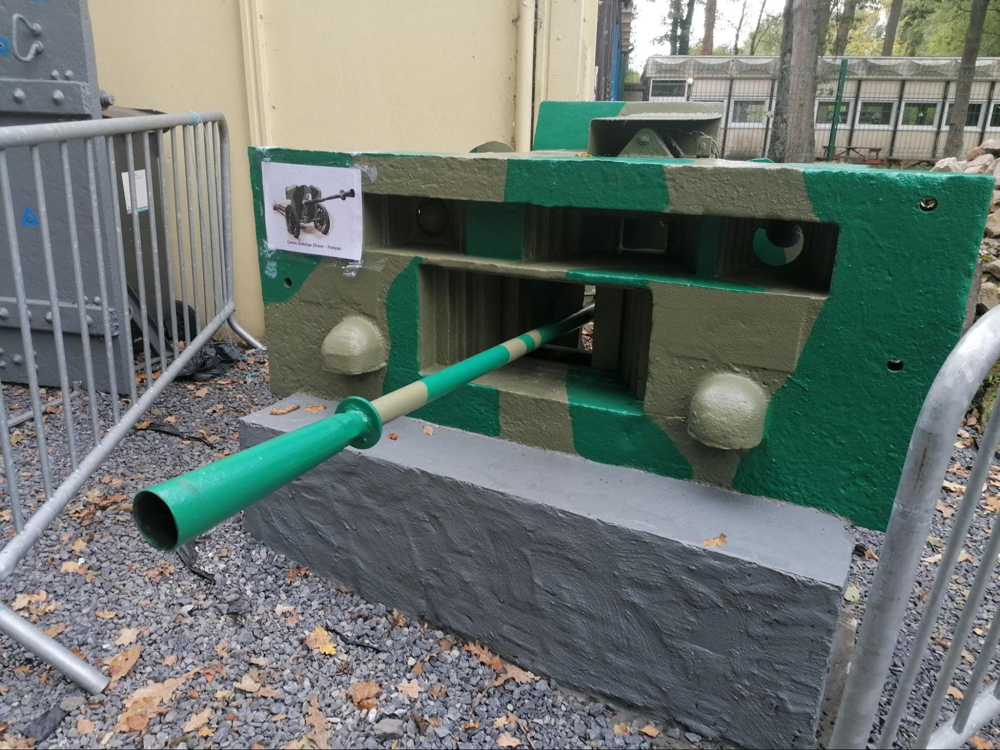
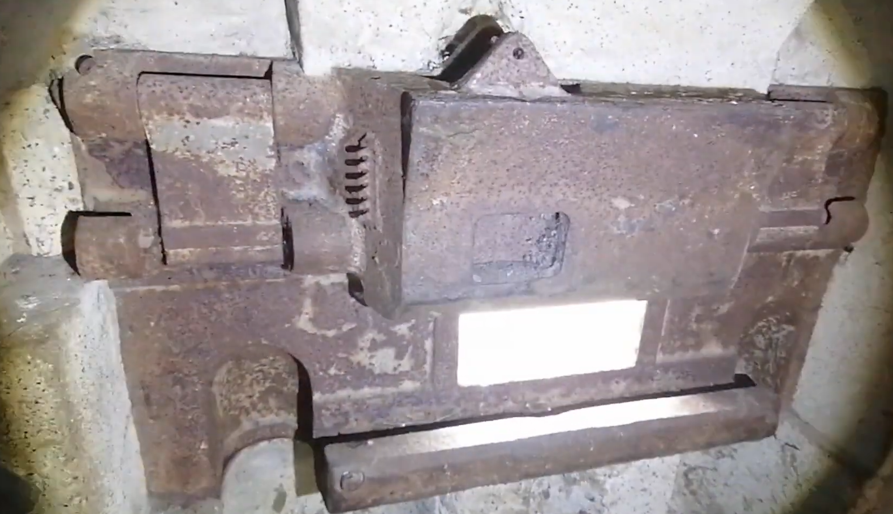

La trémie Pamart-Lemaigre est un dispositif de cuirassement conçu à la fin des années 1930 pour améliorer la protection des embrasures de tir dans les blockhaus français. Elle s’inscrit dans une phase d’optimisation des fortifications modernes, où l’on cherche à réduire au maximum la vulnérabilité des ouvertures tout en conservant une efficacité de tir suffisante pour les armes automatiques et antichars.
Ce système est principalement destiné aux casemates armées du canon de 25 mm SA 34, mais il peut également être adapté à des armes d’infanterie comme la mitrailleuse Hotchkiss modèle 1914 ou le fusil-mitrailleur. L’idée centrale du dispositif est de remplacer une simple ouverture de tir, très exposée aux tirs directs et aux éclats d’obus, par un bloc blindé intégré directement dans la façade en béton de l’ouvrage. La trémie forme ainsi une sorte de “bouclier” métallique encastré, limitant fortement les angles d’impact possibles sur les points sensibles.
Sur le plan technique, la trémie Pamart-Lemaigre est une pièce moulée en acier blindé, fixée dans le béton de la casemate. Elle comprend une ouverture principale destinée au tube de l’arme, ainsi que des dispositifs de protection associés comme des volets blindés et des systèmes d’obturation permettant de fermer complètement l’embrasure lorsque le tir n’est pas en cours. Certaines versions intègrent également des ouvertures secondaires liées à la visée ou à l’observation, toujours protégées pour éviter toute pénétration directe.
L’un des intérêts majeurs de ce dispositif réside dans la gestion des champs de tir. Selon les configurations et les armes installées, l’angle horizontal de couverture varie : environ 46 degrés pour un canon de 25 mm, jusqu’à 54 degrés pour une mitrailleuse Hotchkiss, et environ 46 degrés pour un fusil-mitrailleur. Ces valeurs montrent que le système a été pensé pour offrir une couverture efficace tout en maintenant une ouverture minimale, afin de limiter la surface exposée aux attaques ennemies.
Un élément important dans l’histoire de ce dispositif est son expérimentation sur le terrain. Le bloc du stade d’Onnaing est identifié comme le premier ouvrage à avoir reçu un prototype de trémie Pamart-Lemaigre. Les résultats obtenus étant jugés satisfaisants, le principe est ensuite conservé et diffusé sur d’autres ouvrages fortifiés.
D’un point de vue tactique, la trémie Pamart-Lemaigre représente une évolution importante dans la conception des blockhaus. Elle répond à un problème majeur des fortifications de l’époque : les embrasures classiques constituaient des points faibles facilement exploitables par l’ennemi. Grâce à sa forme compacte et blindée, la trémie réduit considérablement les risques d’intrusion de grenades, de tirs directs dans l’ouverture ou de destruction de l’arme servie. Elle améliore également la survie de l’équipage en limitant les effets des éclats à l’intérieur du poste de tir.
Ce dispositif illustre ainsi la recherche permanente d’un équilibre entre protection et efficacité de feu dans les ouvrages de la ligne fortifiée française. La trémie Pamart-Lemaigre ne se limite pas à une simple amélioration technique : elle témoigne d’une véritable réflexion sur la survie des combattants en position fixe et sur l’adaptation des fortifications aux armes modernes de la fin des années 1930.

Reproduction d’une trémie pamart-lemaigre par l’association maginot escaut.

Vue intérieure de la trémie.